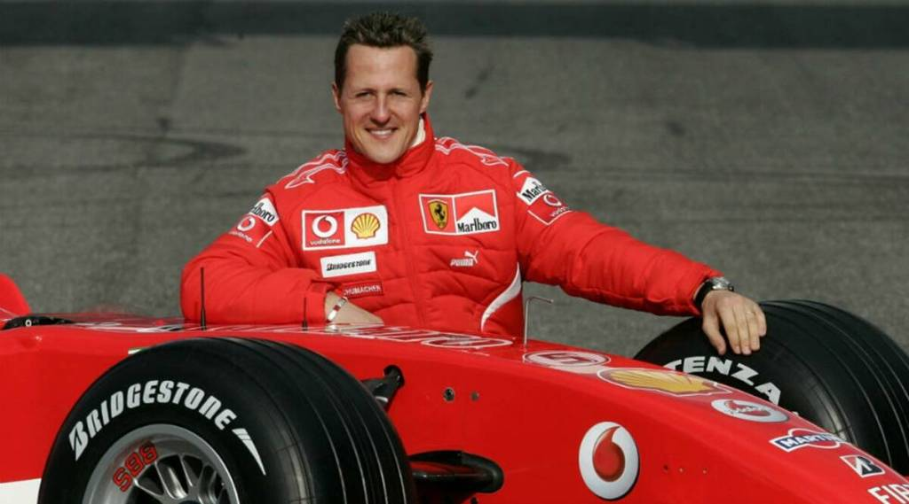

Michael Schumacher (/ˈʃuːmɑːkər/; German: [ˈmɪçaːʔeːl ˈʃuːmaxɐ] (listen); born 3 January 1969) is
a German former racing driver who competed in Formula One for Jordan, Benetton, Ferrari, and
Mercedes. Schumacher has a joint-record seven World Drivers' Championship titles (tied with
Lewis Hamilton) and, at the time of his retirement from the sport in 2012, he held the records
for the most wins (91), pole positions (68), and podium finishes (155)—which have since been
broken by Hamilton—while he maintains the record for the number of total fastest laps (77),
among others.
After beginning his racing career in karting, Schumacher enjoyed success in several junior
single-seater series. After a one-off Formula One appearance with Jordan at the 1991 Belgian
Grand Prix, Schumacher was signed by Benetton for the rest of the 1991 season. He won his first
and second drivers' titles consecutively in 1994 and 1995. Schumacher moved to the struggling
Ferrari team in 1996. During his first years at the team, Schumacher lost out on the title in
the final race of the season in 1997 and 1998 and suffered a broken leg from a brake failure in
1999. He and Ferrari won five consecutive titles from 2000 to 2004, including unprecedented
sixth and seventh titles, breaking several records. After finishing third in 2005 and second in
2006, Schumacher retired from the sport, although he later made a brief return with Mercedes
from 2010 to 2012
Early years
Schumacher's title-winning German Formula Three car from 1990
Michael Schumacher was born in the West German town of Hürth, North Rhine-Westphalia, on 3
January 1969, to working-class parents Rolf—a bricklayer who later ran the local kart track—and
Elisabeth Schumacher (1948–2003), who operated the track's canteen.[1] When Schumacher was four,
his father modified his pedal kart by adding a small motorcycle engine. After Michael crashed it
into a lamp post in Kerpen, his parents took him to the karting track at Kerpen-Horrem, where he
became the youngest member of the karting club. His father built him a kart from discarded parts
and, at the age of six, Schumacher won his first club championship. To support his son's racing,
Rolf took on a second job renting and repairing karts, while his wife worked at the track's
canteen. Nevertheless, when Michael needed a new engine costing 800 DM, his parents were unable
to afford it; he was able to continue racing with support from local businessmen.[2]
